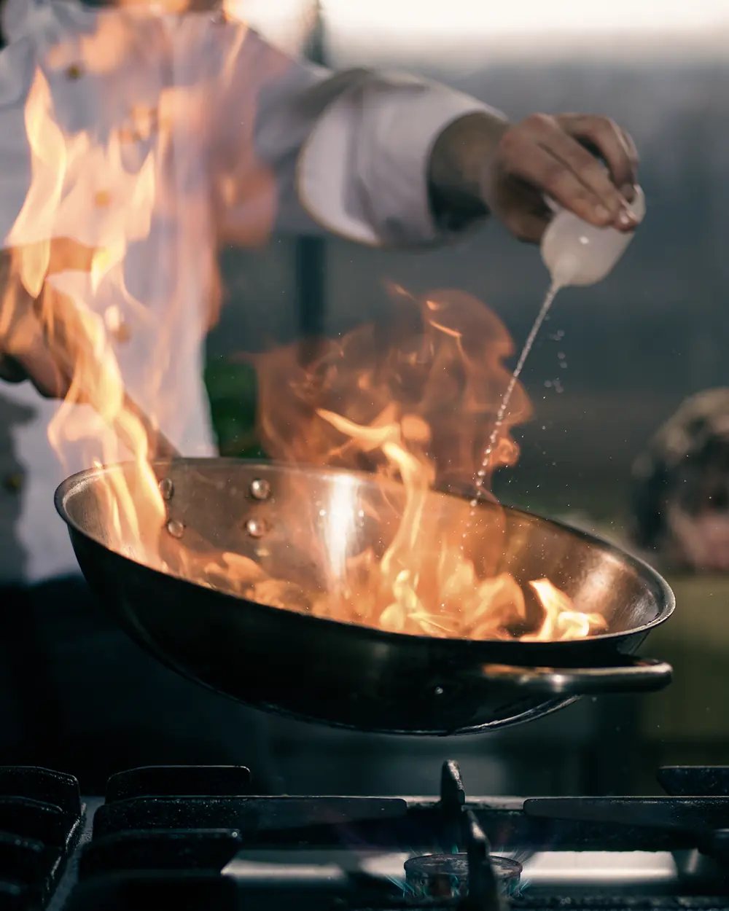
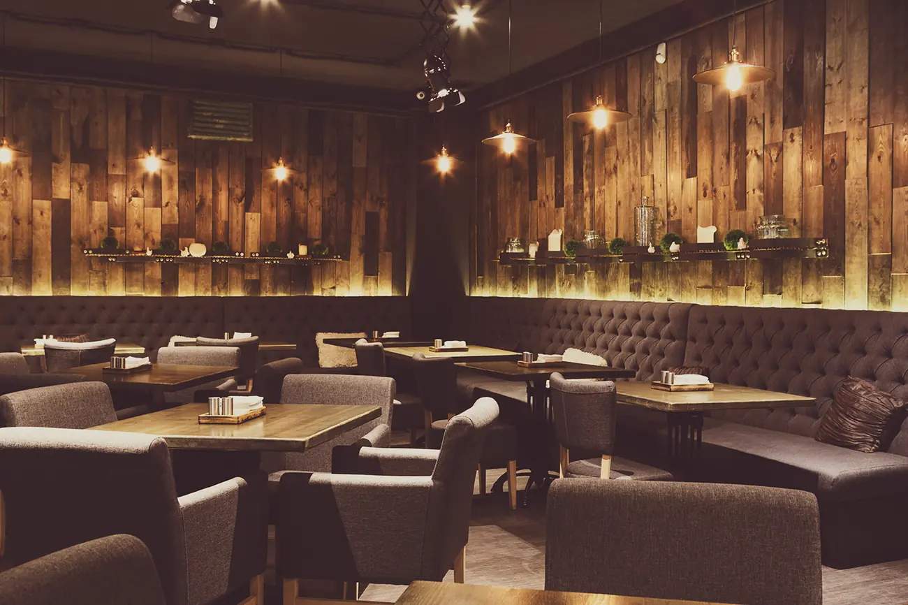

Fire lit at 16:00 · 6 tables left tonight
One hearth. Three woods — oak, beech, apple. No gas, no freezer, and a menu written the same morning it is cooked. When the fire goes out, service is over.
A wood fire is not one heat, it is four. We build ours at four in the afternoon and spend the night moving food through it — from the open flame down to the last grey ash.
900°C
Thirty seconds, no more. Flatbread goes straight into the burning wood and comes out blistered, smoke-black at the edges, still soft in the middle.
620°C
The grill sits here. Sirloin, sardines, hispi cabbage — anything that wants a hard crust and a cool centre. This is where most of the night happens.
280°C
By ten the fire is tired. Brisket that went in at breakfast comes out now, twelve hours later, held together by nothing but collagen and time.
120°C
Beetroot and onion are buried in the embers overnight. We dig them out the next morning, skins burnt to paper, and the day starts again.

The hearth is the middle of the room, not behind a door. You will smell the smoke on your coat tomorrow. Everyone who cooks here also carries plates, and everyone who carries plates knows exactly what happened to your food.
“If the fire is wrong, everything after it is wrong. So we start there and work outwards.”
Nadia Oyelaran — head of the fire

Timber, low light, and a bar you can eat at alone without anyone making it strange. We take bookings for two to six. Larger than that, call us and we will work something out.
| Tuesday — Thursday | 17:00 — 23:00 |
|---|---|
| Friday — Saturday | 17:00 — 01:00 |
| Sunday | 13:00 — 21:00 |
| Monday | Closed — the fire rests |